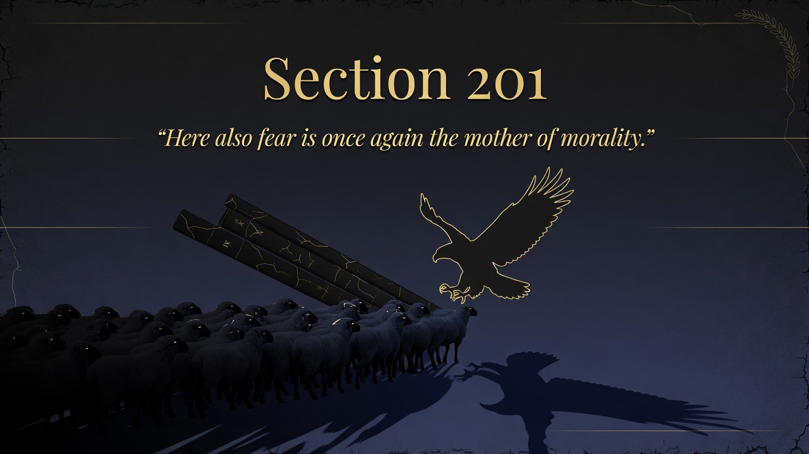
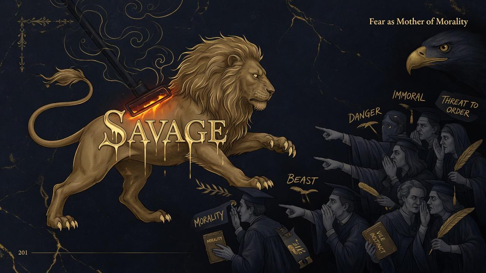
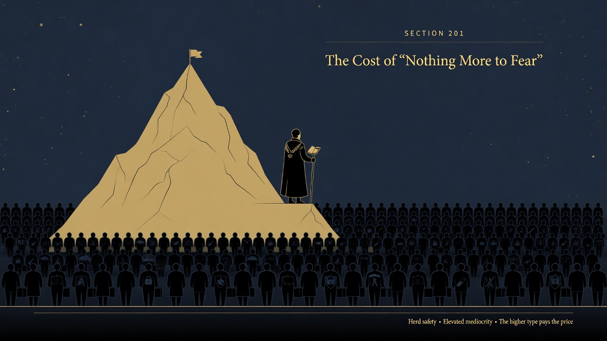

Part Five: On the Natural History of Morals • Beyond Good and Evil
Herd morality grows from fear—when a community feels safe, it starts calling strong independent people evil. Traits like ambition and solitude get rebranded as threats because they shake group comfort. Fear is doing the moral labeling.
Section 201 diagnoses the origin of what Nietzsche calls herd morality in fear and the drive for self-preservation of the community. So long as the ruling utility is that of the herd, moral judgments condemn whatever appears dangerous to the survival and equality of the group. What once counted as strength—enterprise, daring, desire for revenge, rapacity, the will to mastery—was honored and cultivated when external threats required it. Once the community feels secure against outsiders, these same drives are experienced as doubly dangerous because no diversionary channels remain. They are gradually abandoned, branded immoral, and slandered.
Under very peaceful conditions the severity even of justice begins to trouble the conscience. The criminal is taken seriously as someone the community itself has harmed; punishment itself seems dreadful. The morality of timidity draws its final conclusion: “Is it not enough to make him undangerous? Why still punish? To punish is itself dreadful!” The overarching imperative extracted from the contemporary European conscience is the timid herd’s wish: “Our wish is that at some point or other there is nothing more to fear!” Progress itself is increasingly defined as the path to that goal.
herd morality is not universal benevolence but the prudence of the weak and the frightened, universalized. It levels distinctions, honors mediocrity, and turns against the exceptional. Nietzsche does not romanticize violence; he insists that a single morality which mistakes itself for the only possible one endangers the future health and higher possibilities of humanity.
Contemporary safety culture, risk-aversion in institutions, therapeutic approaches that prefer rendering individuals “undangerous” over holding them accountable, and social mechanisms that brand dissenting or ambitious voices as threats all echo this logic. The elevation of comfort, equality of outcome, and emotional safety above excellence or danger repeats the herd’s final conclusion. The free spirit asks whether a society organized entirely around the elimination of fear can still produce or even tolerate the types who create new values and higher forms of life. ~320 words. Drawn from the Kaufmann translation and context in Part Five.


